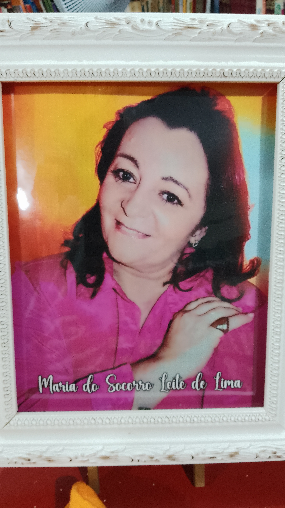

O que é uma biblioteca?
Muito além do que só armazenar livros, a Biblitoeca conserva documentos, dissemina saberes e informações, também acolhe os estudantes no seu espaço de estudo.
É um local inde a comunidade de Milagres pode se reunir e crescer no conhecimentos e na interação partilhada.
As ações culturais aqui desenvolvidas abrangem escolas, associações, e órgãos municipais, proporcionando bem estar a todos que aqui visitam.
Todos podemos contribuir, tornando este espaço físico um lugar melhor, explorando suas estantes, abrindo o mundo da leitura, do conhecimento e imaginação. Contribuindo assim para a formação de uma Milagres mais dinâmica, democrática e transformadora.
Bibliografia Socorro Lima
Maria Socorro Leite de Lima nasceu em Milagres, Ceará, no dia 07 de julho de 1955, sendo a primeira dos cinco filhos de Valdemar Leite Tavares e Francisca Figueiredo Morais Leite. Conhecida carinhosamente como Socorrinha, foi uma destacada professora em nossa terra. Casada com Luiz Carlos Lins de Lima, teve quatro filhos: Raimundo Carlos, Ana Ivyna, Maria Odete e Ana Myrla. Residiu sempre em Milagres, onde nutria um imenso amor pela comunidade.
Seus estudos tiveram início no Colégio Santa Terezinha, mas ela frequentou também a Escola Wilson Gonçalves, a Escolinha de Dona Maroly (uma grande incentivadora do conhecimento, da qual Socorrinha aprendeu suas primeiras lições de professora e artista) e o Patronato Zefinha Gomes. Socorrinha formou-se em Letras pela Universidade Regional do Cariri (URCA), concluindo também uma pós-graduação em Literatura.
Ao longo de sua carreira, lecionou Língua Portuguesa na antiga Escola Padre Joaquim Alves, na Escola Antônia Lindalva de Morais e no Patronato Zefinha Gomes. Ensinava com paixão e espalhava gentileza com sua abordagem sempre divertida. Participava ativamente de palestras, saraus e recitais, demonstrando seu amor pela literatura.
Seu apreço pela leitura, canto, recitação e escrita de poemas era notável. Socorrinha realizava semanalmente uma Escolinha de Leitura e Recreação, encantando as crianças com histórias, arte e a magia do mundo lúdico.
Mesmo após a aposentadoria, Socorrinha continuou frequentando escolas para compartilhar poemas, contar histórias e discutir coisas bonitas, relacionadas à arte e aos sonhos. Mesmo diante de desafios, ela enxergava o mundo e a vida com cores e melodias. Como colecionadora de figuras e conhecimentos, deixou livros, pastas com recortes importantes de jornais e revistas, além de poemas e lembranças, no coração de todos que tiveram a oportunidade de conhecê-la.